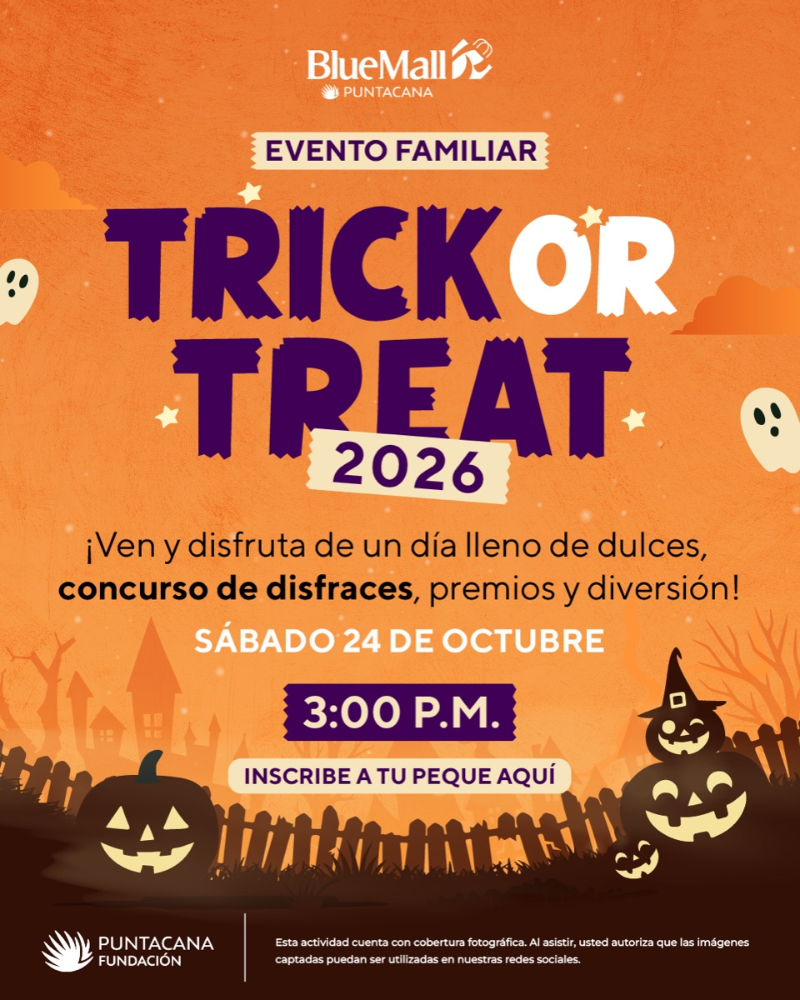
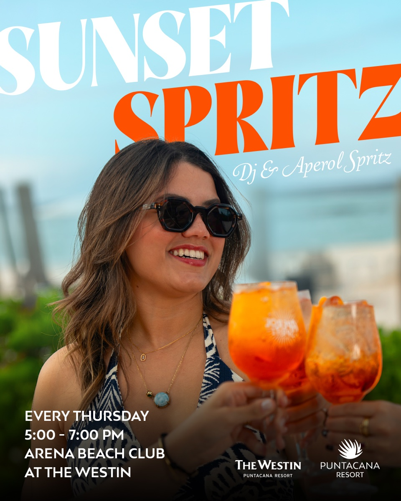
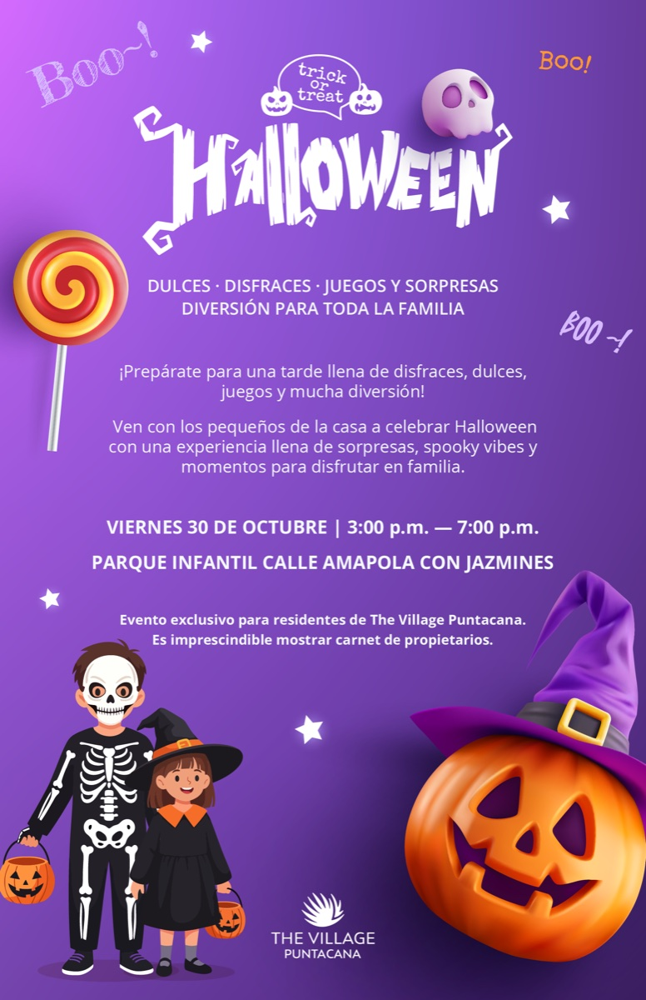
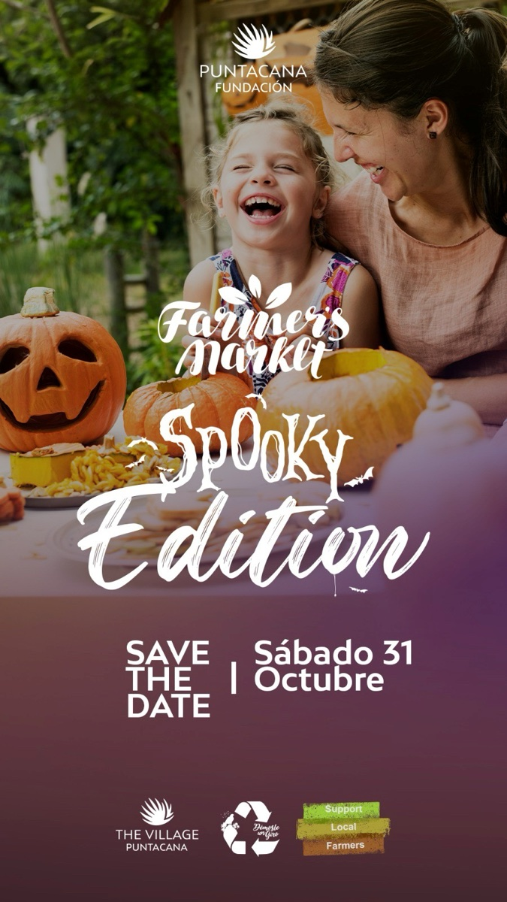
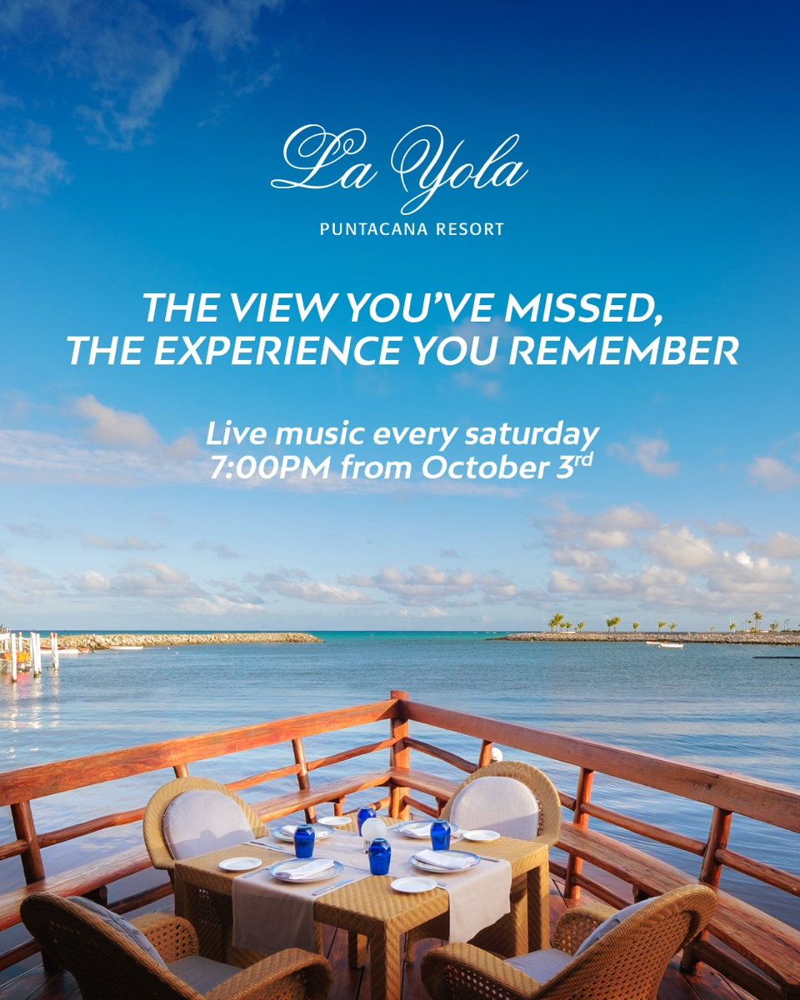
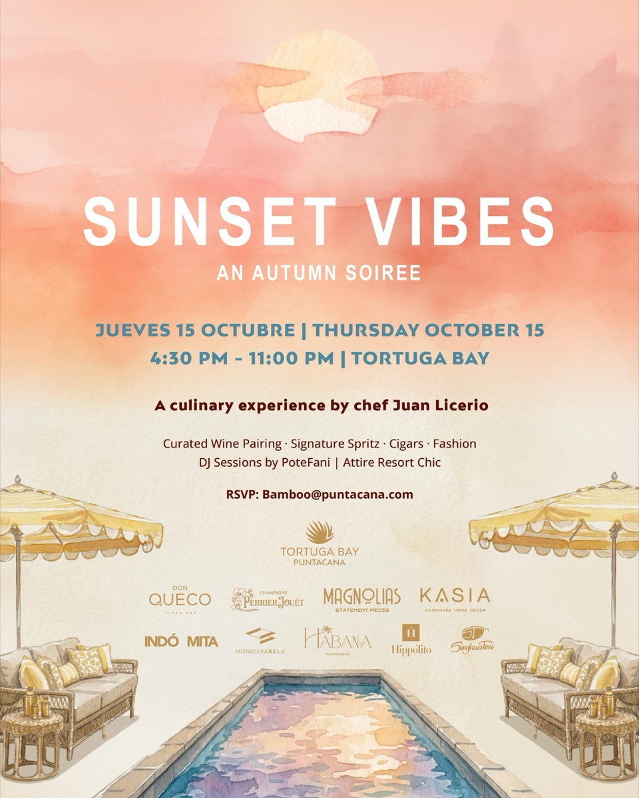
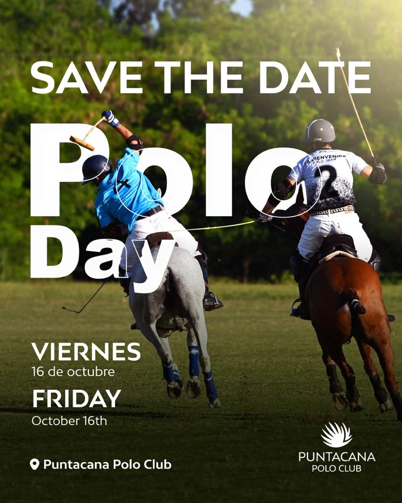
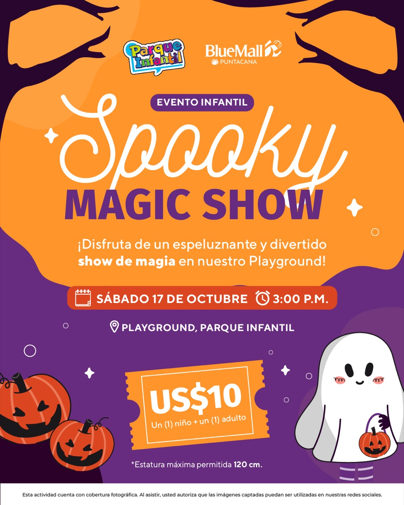
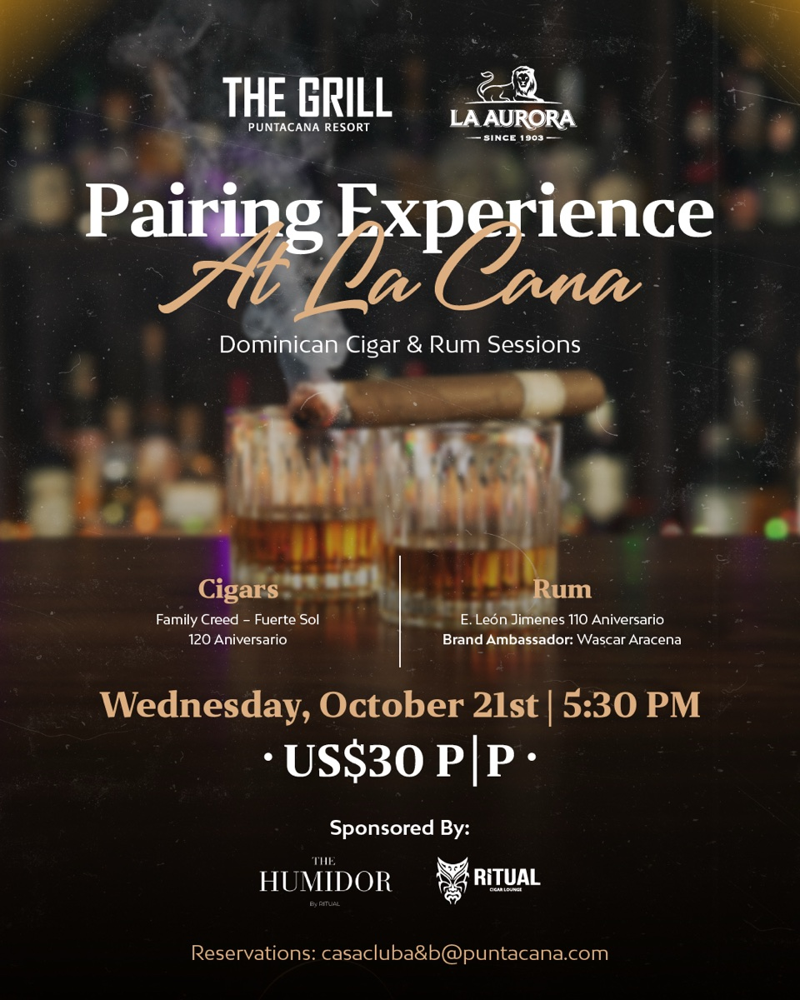
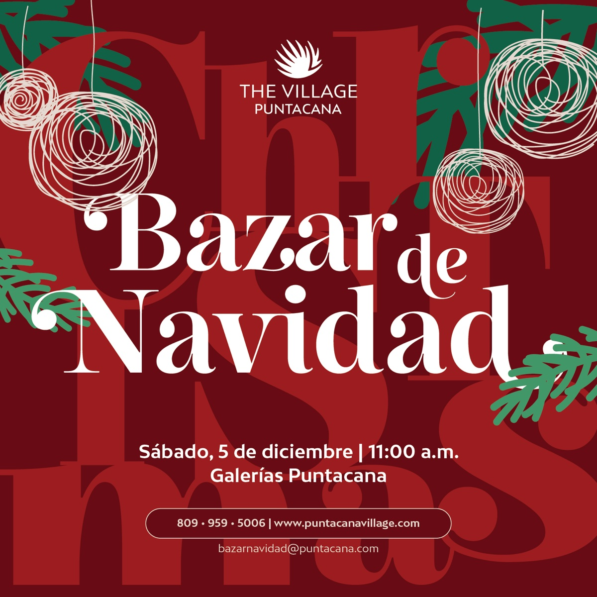

Local calendar
October 2026 events in Punta Cana Village and nearby

October brings a mix of family activities, live music, food-and-drink events, and resort experiences to the Punta Cana area. Some listings are in The Village, while others are at nearby hotels, a beach club, a shopping center, or the polo club. This roundup is based on event flyers shared for October 2026; it is not a claim that every venue is inside Punta Cana Village.
Still ahead this month
Saturday, October 24: Trick or Treat 2026
A Punta Cana Fundación family event is advertised for 3:00 p.m., with sweets, a costume contest, prizes, and activities. The flyer does not specify a venue or admission price and invites families to register children, so check the organizer's current information before setting out.

Thursday, October 29: Sunset Spritz
A weekly sunset gathering is listed at Arena Beach Club at The Westin Punta Cana Resort, Thursdays from 5:00 to 7:00 p.m. The October 29 date is the final Thursday of the month. Check with the venue for current access and booking details.

Friday, October 30: Halloween at The Village
The Village Punta Cana flyer lists a family Halloween celebration from 3:00 to 7:00 p.m. at the children's park on Calle Amapola con Jazmines. It is marked as exclusive to The Village residents, and attendees must show an owner identification card.

Saturday, October 31: Spooky Edition Farmers Market
Punta Cana Fundación announced a Halloween-themed edition of its Farmers Market for Saturday, October 31. The flyer does not show a start time or location, so confirm both with the organizer before going.

Weekly music listings
La Yola: Live music is advertised every Saturday from 7:00 p.m., starting October 3, at La Yola in Puntacana Resort. The remaining October dates are October 24 and 31. Check directly with the restaurant for reservations.

Earlier in October
October 15 — Sunset Vibes at Tortuga Bay
A resort-chic evening from 4:30 to 11:00 p.m., featuring a culinary experience by chef Juan Licerio, wine pairings, a signature spritz, cigars, fashion, and DJ sets by PoteFani.

October 16 — Polo Day
A date announcement for Puntacana Polo Club. The flyer did not include a start time.

October 17 — Spooky Magic Show
A children's magic show at Playground, Parque Infantil, at 3:00 p.m. The flyer listed US$10 for one child and one adult and a maximum child height of 120 cm.

October 21 — Pairing Experience at The Grill
A Dominican cigar-and-rum session at The Grill, Puntacana Resort, at 5:30 p.m. The advertised price was US$30 per person.

Other dates and offers in the same newsletter
These announcements were included in the same newsletter, but take place after October.
November 20–21: Culinary Weekend at Tortuga Bay Hotel
The flyer highlights a Culinary Weekend featuring Brazilian chef Tássia Magalhães and describes the cuisine as Italian reimagined through Brazilian roots.
December 5: Bazar de Navidad
The Village Punta Cana lists its Christmas bazaar at Galerías Puntacana, starting at 11:00 a.m.

The newsletter also promoted a 60-minute Cryo Lifting Facial at The Spa for US$195, without an event date.
Make Punta Cana your home base
Compare our homes in Punta Cana Village and Cap Cana for your next visit.